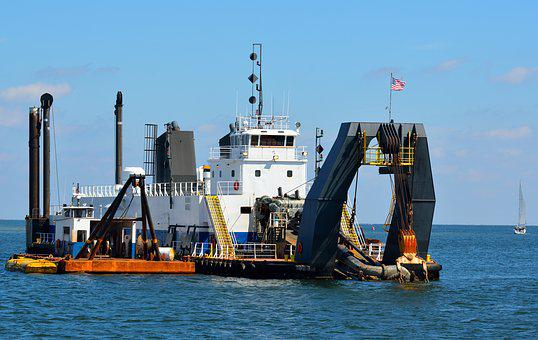

Marine engineering is the engineering of marine vessels and constructions, including boats, ships, and oil rigs. This sort of engineering division generally utilizes heavy mechanical and electrical applications for the plan, advancement, and maintenance of the designed item. However, the fundamental planning aspect is taken care of by architects, the main engineering capacities, for example, the fueling and motorization perspectives are taken care of by the marine specialists. The engineered product is constructed remembering the geological parts of the water bodies they are to be worked in, similar to the oceans, streams, inland waters and so Marine Engineering in Germany and somewhere else, however, is an engaged field of study; it very well may be additionally partitioned to make highly specific streams like seaward engineering, oceanic, and lot more.
Students who study marine engineering in Germany have to understand the human cooperation with the water body and ways of controlling something similar. This sort of engineering needs to understand the hydro-environmental perspectives as the dirt underneath the water isn’t equivalent to that on the land. Subsequently, students of marine engineering in Germany need to understand the dirt surface underneath water bodies. This is more specific for seaward engineers, whose responsibility is to build oil rigs and fixed vessels. The field of marine engineering is helped both by the public authority and as well as private organizations in today’s high importance. Furthermore, as the enterprises have begun crossing borders for exchange purposes, the scope of the people who study marine engineering in Germany started widening. The oceanic business in itself is exceptionally big, representing around 90% of all worldwide industries. Germany is the core of engineering developments and gives the perfect time to students and organization employees to sign up for the course of their preference and extend their knowledge in this field.